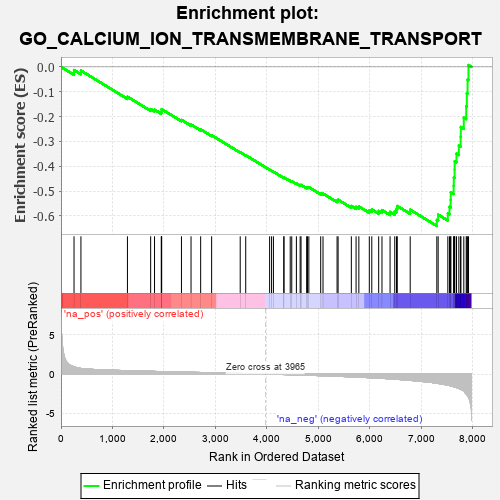
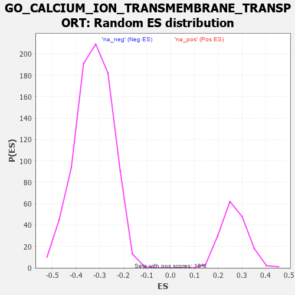

| | | Dataset | 7d |
| Phenotype | NoPhenotypeAvailable |
| Upregulated in class | na_neg |
| GeneSet | GO_CALCIUM_ION_TRANSMEMBRANE_TRANSPORT |
| Enrichment Score (ES) | -0.6403141 |
| Normalized Enrichment Score (NES) | -1.9683918 |
| Nominal p-value | 0.0 |
| FDR q-value | 0.002918589 |
| FWER p-Value | 0.016 |
Table: GSEA Results Summary

Fig 1: Enrichment plot: GO_CALCIUM_ION_TRANSMEMBRANE_TRANSPORT
Profile of the Running ES Score & Positions of GeneSet Members on the Rank Ordered List
| PROBE | GENE SYMBOL | GENE_TITLE | RANK IN GENE LIST | RANK METRIC SCORE | RUNNING ES | CORE ENRICHMENT | | 1 | THADA | | | 253 | 0.931 | -0.0128 | No |
| 2 | BAX | | | 387 | 0.711 | -0.0150 | No |
| 3 | PARL | | | 1290 | 0.432 | -0.1202 | No |
| 4 | JPH1 | | | 1741 | 0.347 | -0.1699 | No |
| 5 | FMR1 | | | 1816 | 0.334 | -0.1724 | No |
| 6 | CUL5 | | | 1947 | 0.314 | -0.1824 | No |
| 7 | MCUR1 | | | 1953 | 0.313 | -0.1766 | No |
| 8 | MICU1 | | | 1954 | 0.313 | -0.1702 | No |
| 9 | ANO6 | | | 2339 | 0.255 | -0.2135 | No |
| 10 | SPG7 | | | 2525 | 0.223 | -0.2323 | No |
| 11 | PHB2 | | | 2712 | 0.197 | -0.2518 | No |
| 12 | ERO1A | | | 2925 | 0.162 | -0.2752 | No |
| 13 | CDK5 | | | 3480 | 0.080 | -0.3436 | No |
| 14 | CHERP | | | 3587 | 0.062 | -0.3557 | No |
| 15 | ATG5 | | | 4051 | -0.016 | -0.4139 | No |
| 16 | PDE4B | | | 4089 | -0.022 | -0.4182 | No |
| 17 | ABL1 | | | 4125 | -0.027 | -0.4221 | No |
| 18 | STAC | | | 4327 | -0.064 | -0.4461 | No |
| 19 | OPA1 | | | 4330 | -0.065 | -0.4450 | No |
| 20 | TMCO1 | | | 4451 | -0.085 | -0.4585 | No |
| 21 | JPH3 | | | 4481 | -0.091 | -0.4603 | No |
| 22 | MICU3 | | | 4571 | -0.110 | -0.4693 | No |
| 23 | LETM1 | | | 4644 | -0.127 | -0.4757 | No |
| 24 | ITPR1 | | | 4661 | -0.130 | -0.4751 | No |
| 25 | PLCG1 | | | 4770 | -0.151 | -0.4856 | No |
| 26 | MYO5A | | | 4787 | -0.155 | -0.4845 | No |
| 27 | P2RX4 | | | 4813 | -0.161 | -0.4843 | No |
| 28 | PDPK1 | | | 5043 | -0.207 | -0.5090 | No |
| 29 | DRD2 | | | 5088 | -0.221 | -0.5100 | No |
| 30 | ITPR3 | | | 5361 | -0.288 | -0.5385 | No |
| 31 | GRIN1 | | | 5381 | -0.291 | -0.5349 | No |
| 32 | G6PD | | | 5638 | -0.358 | -0.5599 | No |
| 33 | CALCR | | | 5730 | -0.386 | -0.5635 | No |
| 34 | TRPC6 | | | 5784 | -0.401 | -0.5619 | No |
| 35 | STAC2 | | | 5987 | -0.466 | -0.5779 | No |
| 36 | TRPC3 | | | 6035 | -0.483 | -0.5739 | No |
| 37 | STIM1 | | | 6169 | -0.528 | -0.5799 | No |
| 38 | RGN | | | 6233 | -0.547 | -0.5766 | No |
| 39 | TRPM4 | | | 6390 | -0.612 | -0.5837 | No |
| 40 | DYSF | | | 6481 | -0.654 | -0.5816 | No |
| 41 | TRPV4 | | | 6515 | -0.668 | -0.5721 | No |
| 42 | REM1 | | | 6530 | -0.676 | -0.5599 | No |
| 43 | TRPM8 | | | 6781 | -0.800 | -0.5751 | No |
| 44 | ANK2 | | | 7298 | -1.170 | -0.6162 | Yes |
| 45 | TRPM1 | | | 7324 | -1.197 | -0.5948 | Yes |
| 46 | VDAC1 | | | 7512 | -1.409 | -0.5895 | Yes |
| 47 | TRPM3 | | | 7544 | -1.461 | -0.5633 | Yes |
| 48 | CALM1 | | | 7567 | -1.499 | -0.5353 | Yes |
| 49 | TRPV6 | | | 7569 | -1.502 | -0.5045 | Yes |
| 50 | TRPA1 | | | 7625 | -1.608 | -0.4784 | Yes |
| 51 | PKD1 | | | 7628 | -1.611 | -0.4455 | Yes |
| 52 | MCU | | | 7644 | -1.637 | -0.4138 | Yes |
| 53 | TRPM6 | | | 7645 | -1.637 | -0.3801 | Yes |
| 54 | TRPM2 | | | 7680 | -1.712 | -0.3492 | Yes |
| 55 | ASIC1 | | | 7726 | -1.838 | -0.3171 | Yes |
| 56 | TRPM7 | | | 7761 | -1.936 | -0.2816 | Yes |
| 57 | PDE4D | | | 7764 | -1.944 | -0.2418 | Yes |
| 58 | PKD2 | | | 7822 | -2.167 | -0.2045 | Yes |
| 59 | CALM3 | | | 7869 | -2.525 | -0.1584 | Yes |
| 60 | FYN | | | 7881 | -2.622 | -0.1058 | Yes |
| 61 | CAV3 | | | 7896 | -2.739 | -0.0513 | Yes |
| 62 | NPSR1 | | | 7913 | -2.947 | 0.0073 | Yes |
Table: GSEA details [plain text format]

Fig 2: GO_CALCIUM_ION_TRANSMEMBRANE_TRANSPORT: Random ES distribution
Gene set null distribution of ES for GO_CALCIUM_ION_TRANSMEMBRANE_TRANSPORT